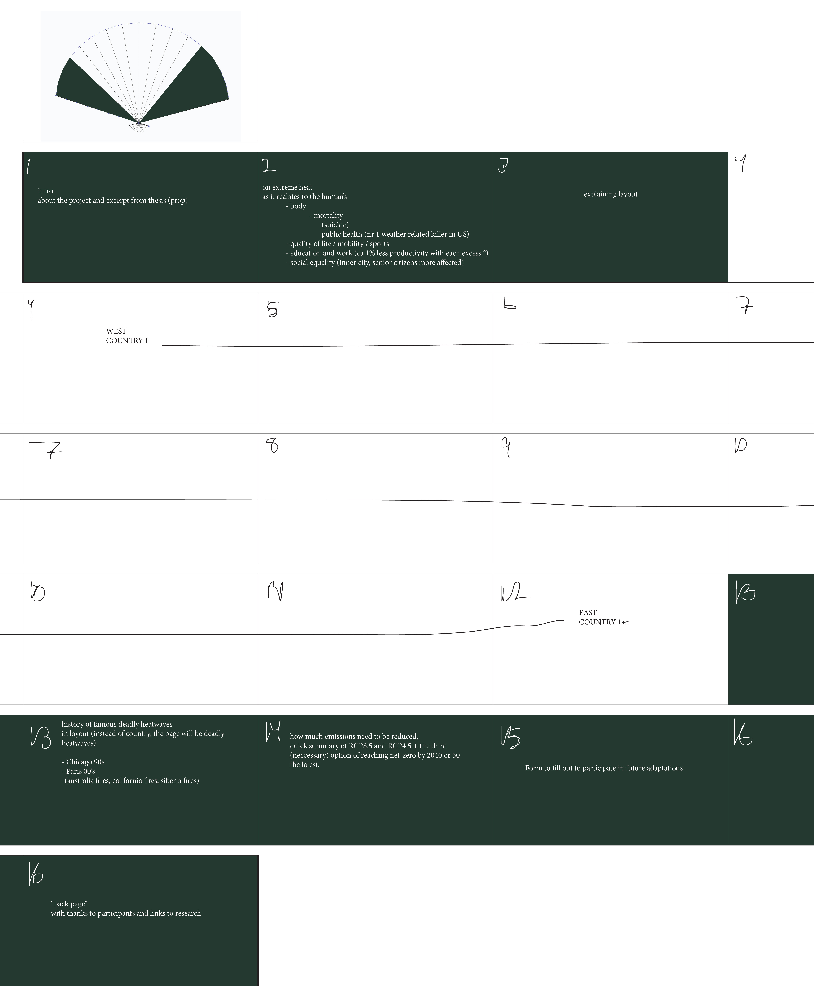

Countries: (9 places atm)
- Brazil (CHECK)
- (want to include the US but perhaps just from a far, so gather culture from there from people not from there. Idk, I find the idea of ignoring their opinion and rather reflecting our opinion of it onto it a bit interesting... but maybe that is just weird.)
- Iceland
- Netherlands (SENT OUT)
- Norway (SENT OUT)
- (want an african country)
- (want a middle eastern country)
- (want India - have a friend there I could ask, but not sure she will respond)
- (want Indonesia, or maybe that is not significant heat-wise as much as flood-wise)
- (maybe Vietnam)
- S-Korea (CHECK)